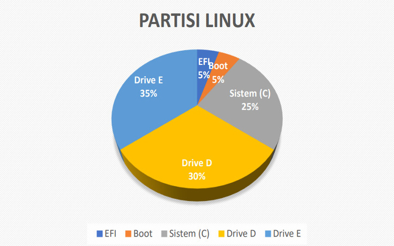

Pemotongan disk adalah pembuatan satu atau beberapa wilayah pada penyimpanan sekunder, sehingga setiap wilayah dapat dikelola secara terpisah.
Installation
Installasi sistem operasi adalah proses penginstallan sistem operasi untuk PC agar dapat di operasikan
Blog
Windows 7
Installation
Ubuntu 14
Installation
Partisi Ubuntu
Partition
Partisi Windows
Partition
M. Dafa Wardana
UI/UX Enthusiast, Web Developer
Instalasi Windows
Sejarah
Windows adalah salah satu software sistem operasi yang di buat oleh perusahaan perangkat lunak terbesar didunia yaitu Microsoft Inc. Windows yang sangat user friendly. Tetapi sistem operasi windows ini tidak open source, jadi tidak dapat bisa memeriksa, melihat kode sumbernya.
Awal mula dari windows ini dari DosShell for DOS 6 buatan Microsoft untuk dapat bersaing terhadap populernya Apple Macintosh yang menggunakan GUI. Microsoft awalnya menciptakan Windows versi 1.0, nah nama Microsoft ini berawal dari karyawannya yang menyebut nama program windows(jendela program). Lalu pada Windows versi 2 adalah windows pertama kali yang dapt di install program. Windows versi 3 memberikan aplikasi tambahan yang lebih banyak yang mudah di konfigurasi. Windows versi 3.1 merupakan versi yang dapat digunakan pada prosesor 32-bit intel 80386 ke atas. Lalu windows versi 3.11 adalah versi yang dapat menghubungkan ke jaringan.
Langkah-Langkah Instalasi
1. Klik new pada virtualbox untuk membuat virtual mechinenya, lalu beri nama vitual yang diinginkan, dan pilih difolder untuk menyimpan file ,dan pilih type dan versi OS yang sesuai.
2. Ketik besaran RAM yang ingin diberikan atau anda dapat mengikuti rekomedasi RAM yang diberikan
3. Ada 3 pilihan untuk hard disk, disini saya memilih hardisk virtual dalam pembuatan virtual mechine nya
4. Ada 3 pilihan untuk tipe hard disk, disini saya memilih Virtual disk image
5. Ada 2 pilihan, disini saya memilih dynimacally allocated , karena nanti hanya di pakai ruang kosong yang ada di harddisk kita
6.Pilih lokasi yang ingin diletakkan untuk installasi dan ketik ukuran hard disk yang diinginkan
7. Pilih dan tambah file ISO yang ingin di install
8. Pilihlah bahasa yang diinginkan, disini saya memilih bahasa inggris, lalu klik install
9. Pilihlah bahasa, Waktu, dan Keyboard yang diinginkan
10. Klik install untuk memulai installasi
11. Pilih versi windows yang ingin di install, disini saya memilih OEM
12. Klik centang untuk menyetujui lissensi windows
13. Pilih installai untuk memulai install, jika memilih upgrade maka nantinya akan melakukan proses upgrade
14. Klik new untuk membuat disk C dan ketik besar ukuran disk C tersebut dan klik apply.
15. Arahkan pada partisi 2 dan lanjut untuk memulai instal.
16. Tunggu sampai proses installasi selesai seluruhya .
17. Setelah proses installasi selesai, maka akan diminta untuk restart , kita dapat klik restart now.
18. Ketik nama pc yang diinginkan.
19. Ketik password yang mudah di ingat untuk memberikan password saat masuk ke windows.
20. Pilih lokasi, tanggal, dan jam yang sesuai .
21. Pilih Home network, agra jaringan yang ada di sekitar dapat terhubung ke PC.
Instalasi Ubuntu
Sejarah
Linux merupakan salah satu sistem operasi yang open source dan mengimplementasikan independen dari POSIX. Maksud dari open source ialah terbuka untuk umum untuk mengembangkannya.
Sistem operasi linux ini dibuat oleh Linus Torvalds yang di masa itu masih menjadi mahasiswa Universitas Helsinki yang awal mulainya linux ini hanya sebagai projek hobinya saja. Linux ingin membuat kernel minix yang open source karena minix ini hamper sama seperti UNIX yang mudah digunakan. Versi awal Linux ialah versi 0.01 yang dirilis pada September 1991, lalu lanjut versi 0.02 pada 5 Oktober 1991. Dan setelah itu banyak paara penulis progam dari seluruh dunia untuk mengikuti proyek linux ini.
Pembuatan linux ini tidak terlepas dari proyek GNU, yang merupakan salah satu program bebas yang terkenal dan diketuai Richard Stallman. GNU dibuat pada tahun 1983, lalu pada tahun 1991 linux versi pertama sudah ada kerangka tulisannya, lalu Torvalds membuat kernel linux ini agar dapat berjalan dengan baik dengan komponen GNU. Sistem operasi ini diberi nama General Public License(GPL) oleh GNU.
Langkah-Langkah Instalasi
1. Klik new pada virtualbox untuk membuat virtual mechinenya, lalu beri nama vitual yang diinginkan, dan pilih difolder untuk menyimimpan file,dan pilih type dan versi OS yang sesuai.
2. Ketik besaran RAM yang ingin diberikan atau anda dapat anda mengikuti rekomedasi RAM yang diberikan
3. Ada 3 pilihan untuk hard disk, disini saya memilih hardisk virtual dalam pembuatan virtual mechine nya
4. Ada 3 pilihan untuk tipe hard disk, disini saya memilih Virtual disk image
5. Ada 22 pilihan, disini saya memilih dynimacally allocated , karena nanti hanya di pakai ruang kosong yang ada di harddisk kita
6.Pilih lokasi yang ingin diletakkan untuk installasi dan ketik besaran hard disk yang diinginkan
7. Pilih dan tambah file ISO yang ingin di install
8. Pilihlah bahasa yang diinginkan, disini saya memilih bahasa inggris, lalu klik install
9. Klik continue untuk melanjutkan proses installasi jika tidak installasi tambahan.
10. Ada 4 pilihan, disini saya memilih menghapus install ubuntu, karena belum ada installasi ubuntu sebelumnya.
11. Pilih lokasi yang sesuai lalu klik continue.
12. Pilihlah keyboard yang sesuai, disini saya memilih US karena keyboard internasional.
13. Ketik nama yang di inginkan, dan ketik password untuk proses login ke ubuntu nantinya.
14. Klik restart PC karena installasi sudah complete.
Partisi OS Ubuntu

Tabel Partisi Linux
Operation System Linux ini memiliki dua Sistem file yaitu Ext (Ext2,Ext3,Ext4) dan ReiserFS.
Ext2 (Extended 2nd)
File system jenis Ext2 ini merupakan awal dari semua file system di distro linux dan yang tertua sejak tahun 1993. File siystem ini menyimpan data secara struktural, jadi data disimpan di file, dan file disimpan di dalam dirtectory. Setiap directory bisa mencakup sub directory yang menyimpan file dan data. Ext2 mendefinisikan tpologi file pada sistem diasosiasiakan dengan struktur data inode. Setiap file sistem terdiri dari inode tunggal dan setiap inode memiliki nomor identifiksi yang unik.
Ext3 (Extended 3rd)
File sistem jenis Ext3 ini merupakan pembaruan dari Ext2. pembaruan dari file system ini memiliki peningkatan seperti berikut:
Dapat melakukan recovery data yang lebih cepat dibanding Ext2.
Mampu mengintegrasikan data jika terjadi kerusakan (unclean Shut down).
Membutuhkan sekitar 1s untuk recover.
Ext4 (Extended 4th)
File system jenis Ext4 ini merupakan hasil pengembangan dari jenis Ext3 sebelumnya. Dapat meningkatkan daya tampung maksimal filesystem ke 1 Exa Byte, dengan ukuran maksimum filesystem dengan 16 TB untuk maksimum file size nya, Fast fsck, Journal checksumming, Defragmentation support.Kelebihan dari file system ini dilihat dari performanya yang dapat membaca maupun menulis data yang besar.
Reiser FS
File system jenis Raiser FS ini memiliki ciri yang mirip dengan Ext3. Raiser FS ini memiliki performa yang unggul dalam kinerjanya. Pemanfaatan ruang disk yang cukup baik sehingga lebih efisien dalam menghemat space hardisk yang terbuang sia-sia.
Penamaan Partisi di linux
Penamaan harddisk pada linux sesuai dengan jenis dan letaknya. Misal nya pada harddisk IDE memiliki dama dev sebagai berikut :
/dev/hda (primary master)
/dev/hdb (primary slave)
/dev/hdc (secondary master)
/dev/hdd (secondary slave)
Jika kita menggunakan hardisk SCSI atau SATA maka nama yang akan di berikan pada dev nya ialah /dev/sda, /dev/sdb, dan seterusnya. Untuk dev/sda dinamaipada harddisk pertama, sedangkan /dev/sdb dinamai untuk harddisk kedua.
Jadi penamaan tersebut berdasarkan dari device yang dipakai oleh perangkat tersebut.
Langkah-Langkah Partisi
1. Download terlebih dahulu iso aplikasi partisi gparted di sini. Setelah itu, masuk menu setting → storage , lalu pilih iso gparted live
2. Klik centang pada Live CD/DVD, lalu klik OK
3. Jalankan ubuntu yang telah dimasukkan iso Gparted, lalu tampillah gambar seperti dibawah pilih default lalu tekan Enter untuk menjalankan proses penginstallan.
4. Sekarang konfigurasi untuk console-data, pilih Don’t touch keymap , lalu klik Ok
5. Pilihlah nomor bahasa yang ingin dipakai, lalu tekan Enter.
6. Jika ingin langsung menjalankan gparted nya maka ketik 0 lalu tekan enter untuk memulai secara default
7. Setelah muncul tampilan desktop pilih gparted, setelah itu klik kanan pada sda1 dan pilih Resize/Move
8. Atur size yang sesuai yang diinginkan. Disini saya atur size untuk drive pertama 80% dari 10 GB yaitu 8GB dan drive kedua 20% dari 10GB yaitu 2GB. Kemudian klik Resize/Move.
9. Setelah atur maka klik menu centang di atas dan klik Apply. Setelah itu tunggu sampai proses selesai.
10. Setelah selesai proses partisi, lalu kita buat partisi baru dengan cara klik menu New partisi seperti digambar
11. Setelah muncul tampilan partisinya maka beri lebel pada drive tersebut untuk memberi penanda pada drive terebut, setelah itu klik Add.
12. Setelah atur maka klik menu centang di atas dan klik Apply. Setelah itu tunggu sampai proses selesai.
13. Keluar dari gparted lalu klik kanan dan pilih exit → shutdown.
14. Masuk menu setting →storage, lalu remove iso gparted dari storage, setelah itu jalankan kembali Ubuntu OSnya.
15. Masuk ke disk dan lihat hasil partisi menggunakan gparted live sebelumnya telah berhasil. Disini partisi 2 diberi lebel X.
Partisi OS Windows
A. Macam-macam jenis partisi
Macam-macam jenis partisi(partition table) pada sistem operasi Microsoft Windows ialah sebagai berikut :
FAT
FAT(File Allocation Table) merupakan tipe partisi yang dipakai pada sistem operasi masih menggunakan DOS. Partisi ini masih digunakan pada disket floopy untuk mengatur partisinya dan untuk melakukan recovery.
FAT 16
FAT 16 merupakan perkembangan dari FAT yang didesign untuk mengatur file di disket floopy.Keuntungan dari FAT 16 jenis partisi ini kompatibel hampir di semua sistem operasi windows 95,98, linux, dan Unix.
FAT 32
FAT 32 merupakan perkembangan dari FAT 16 yang mulai dipakai pada windows 95 SP2. Partisi ini dapat menampung cluster yang lebih besar dan telah mengembangkan kemampuannya pada harddisk menjadi lebih baik dari FAT 16. Partisi FAT 32 ini memiliki kekurangan nya yaitu pada sistem operasi masih terbatas tidak seperti FAT 16 yang hampir semua sistem operasi kompatibel.
NTFS
NTFS (New Technology File System) pertama kali di pakai pada windows NT. NTFS memiliki security yang jauh lebih baik, kompresi file, cluster dan support enkripsi data. NTFS sangat kompatibel untuk semua sistem operasi.
Langkah-Langkah Partisi
1. Buka sistem operasi windows pada vitual box, lalu buka windows explorer folder pada komputer. Klik kanan pada Computer dan pilih manage.
2. Setelah terbuka computer management pilih Disk management. Lalu klik kanan pada disk C dan pilih shrink Volume.
3. Ketik ukuran partisi disk 20% dari ukuran disk C
4. Lalu klik New Simple Volume untuk memberi jenis partisi dan nama partisi tersebut.